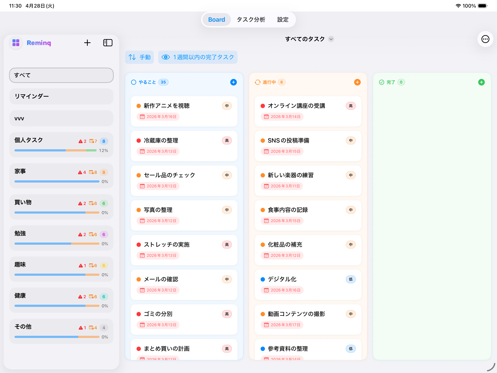
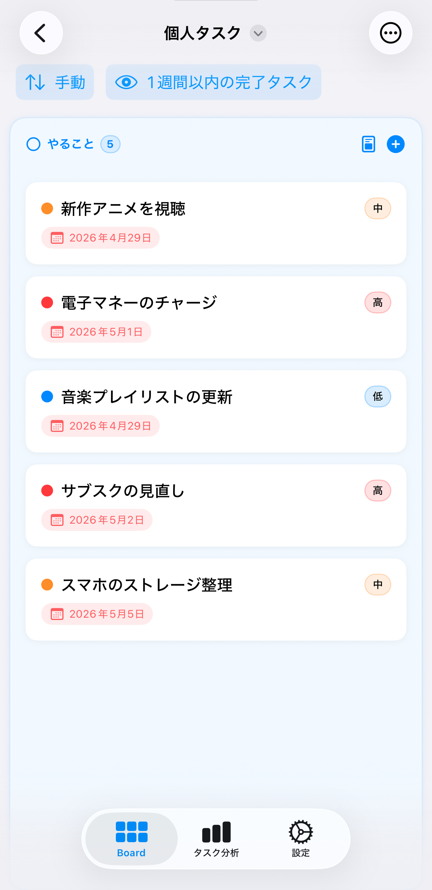

Apple のリマインダーを AI が分析。大きなタスクを実行可能なステップに分解し、優先度まで提案。動き出すための「最初の一歩」が、いつも用意されています。


「資料を作る」と書いただけのタスクは、書いた瞬間に止まる。フラットなリストは、粒度も優先度も「自分で考えて」と言ってくる。Reminq は、その読み解きを AI に任せます。
タスクが粗すぎて、最初の一歩が分からない。後回しが積み重なる。
フラットなリストでは「何件こなしたか」しか分からない。流れが感じられない。
今日どれから手を付けるべきか、リマインダー単体では判断材料が足りない。
曖昧で大きなタスクを AI が分析し、実行可能なステップへ分解。優先度まで提案します。チェックボックスで採用したものだけが、Apple のリマインダーへ静かに反映されます。
AI が分解したタスクを、カンバンで動かし、グラフで振り返る。3 つのステップが滑らかに繋がります。
入力されたタスクから、優先度付きの小タスクが提案されます。
AI が提案した優先度付きでカンバンに並ぶ。ドラッグひとつで TODO → 進行中 → 完了。
完了タスクを週次・月次で可視化。AI 分解と組み合わせれば、止まりやすいタスク・続けられているテーマがデータで見えてきます。
Reminq は Apple 純正の EventKit でリマインダーと双方向同期。通知も iCloud バックアップも標準のまま。アプリを消しても、データは Apple に残ります。
日常の散らかりも、開発のチケットも、同じカンバンで扱う。手元の流れを止めません。
手書きメモや紙の付箋を撮影してデジタルタスクに変換。アナログとデジタルの境界を取り払います。
登録したリマインダーをワンタップで GitHub Issue に変換。開発タスクをそのまま課題管理に持ち込めます。
今日のタスクと進捗をホーム画面に常駐。アプリを開かずに「今やること」を一望できます。
Reminq は完全無料。サブスクや課金は一切ありません。AI 機能を使うときだけ、自分自身の API キーが裏で働きます。データはあなたの端末と Apple のリマインダーに留まり、第三者には渡しません。
AI への通信は端末から直接。Reminq の中継サーバーは存在しません。
サブスクも追加課金もありません。AI を使う場合のみ、自分の API キー側で従量課金が発生します。
Reminq を消しても、あなたのタスクは Apple のリマインダーにそのまま残ります。